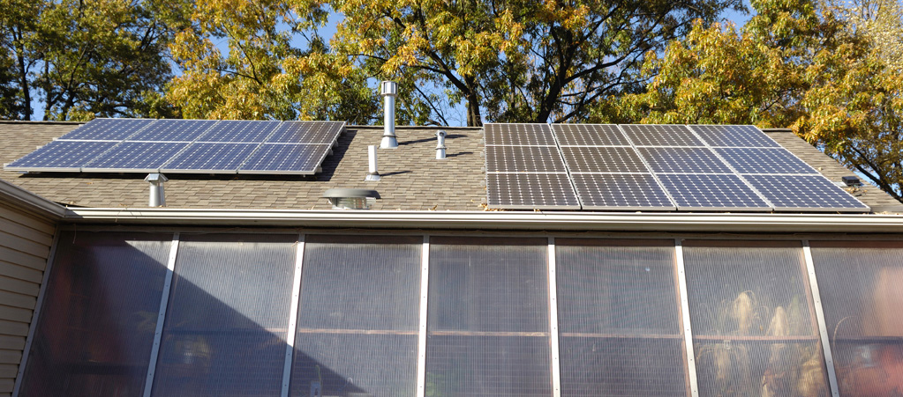

On December 1, 2010 the installation of 8 additional panels rated at 1.92 kW was completed. With these additional panels, we expect to cover 100 percent of our electrical needs. See more details below.


As of March 27th our photovoltaic system has generated 406 kWh of useable electricity. Considering how few days of sunshine we have had in St. Louis, this certainly meets our expectations. Of course it would have been great to have had more days with full sun. On days with full sun, the system generated 15 kWh or more of AC power, on February 24, 15 KWh, on March 23, 15.7 kWh, and on March 26, 16.6 kWh. On those days, the panels were generating at about 90% of their rated capacity during the noon hour. According to the California grosolarcalifornia.org website, this is more than 95% of the PTC rating, which is closer to what can be expected under realistic conditions. (Note that this system consists of twelve 230 watt panels, which have a PTC rating of 209 watts each.)
As of May 31, 2010 our system continues to meet more than 50% of our electric needs and has generated more than 1,162 kWh of useable electricity. In fact, from early April through early May of 2010 the system generated 55 kWh more than we used. The fact that we were out of town for a week was a factor. Up to this point, we have had several days with an output of 16.7 kWh. For the most part, on days with full sun or nearly full sun the system has been generating 15 kWh or more. In May, there were 14 days where more than 14 kWh were generated and 11 days where less than 10 kWh were generated. If it were not for some shading in the early morning before 7:00 am and after 6:30 pm CDT, we would probably be getting 0.2 to 0.4 kWh more on sunny days. For the Month of May, the system will have generated about 352 kWh of electric power.
As of September 18, 2010 our system had generated a total of 2.5 Megawatt hours (2,500 kWh) of electricity. Thus, in 7 1/2 months the solar panels have provided nearly 60% of our electricity. During the month of August the 402 kWh of electricity was generated and we used an additional 311 kWh from the grid. Even with more hours of sunlight during June, July and August a maximum of only 15.5 kWh of electricity was generated in any single day. This compares to a maximum of 16.7 kWh on several days in March and April. Apparently the summer heat with the high temperatures in the attic and roof under the panels significantly reduced their output. At this time, we are considering the possibility of adding another 2 kW in order for us to come close to generating 100% of our electric usage.
On November 3, 2010 the system had generated 3.0 Megawatt (3,000 kWh) hours of AC power. Thus in the nine months since our panels were installed, the system has averaged 333 kWh per month. We are anticipating a total of around 3,600 kWh for the first year of operation. The month of October was especially sunny for this time of year in St. Louis. As a result, 340 kWh of electricity was generated. It is interesting to note that, that there has been more loss due to shading in the early morning and late afternoon than there had been in the spring. With leafs still on the trees, the panels have not been receiving full sun until around 8:45 am CDT. Then after 4:30 pm or so, the panels again begin to lose full sun. As a result, I estimate that we are losing as much as 1 kWh on days with full sun.
On December 1, 2010 the installation of an additional 1.92 kW of generating capacity was completed. With a total of 4.68 kW, we hope to have a system that will generate enough electricity to match most of our electrical usage. The eight additional panels consist of 240 watt Sharp panels, which are manufactured in the United States. For inverters, we chose the so called micro-inverters from Enphase. Each panel has its own inverter with the AC output of each inverter combined and sent to our main circuit breaker panel through an outside cutoff switch. With the micro-inverters there is no need to send DC current to a central inverter. Thus only AC lines run from the inverters into our house.
Due to an incorrect AC cable, one designed for three phase connections, the original installation did not work correctly. After a replacement cable arrived, the people from Straightup Solar quickly completed the installation. Because Enphase apparently has been having trouble keeping up with a large number of orders, it took about two weeks to get the replacement cable. In the short time that the additional panels and inverters have been in place, it appears that they are generating somewhat more than expected in comparison to the original system. In particular, they actually produce as much power as the original system under cloudy conditions. As we have more experience, will provide a more detailed update.
Both our installer, Missouri Solar Living, (renamed Straightup Solar) and our local electric utility, AmerenUE, have been very good to work with. Ameren was very prompt in sending out rebate checks for both installations, and installed a new digital meter a few weeks after the first installation was completed. They did charge for the new meter, but we were advised of this by our installer before starting the project. If you would like additional information, please send me an email, and I will be happy to answer any questions that I can.
Lasted Updated at 9:00 pm CST on December 5, 2010
|  | |||||||
|
On December 1, 2010 the installation of 8 additional panels rated at 1.92 kW was completed. With these additional panels, we expect to cover 100 percent of our electrical needs. See more details below. |
|||||||
|
|||||||
|
|||||||
|
|||||||